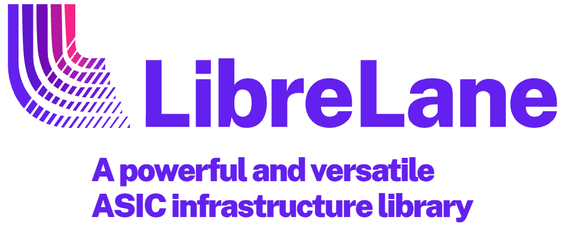
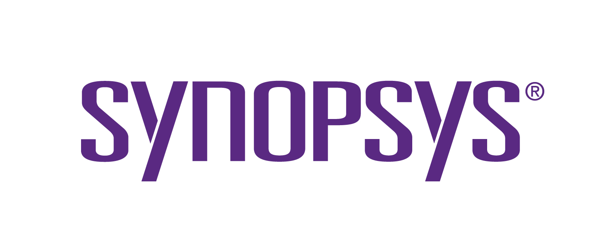
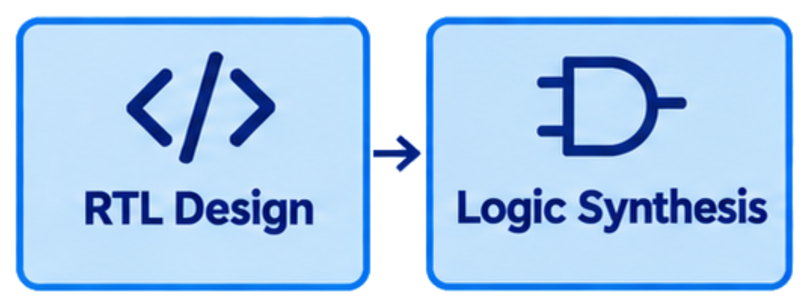
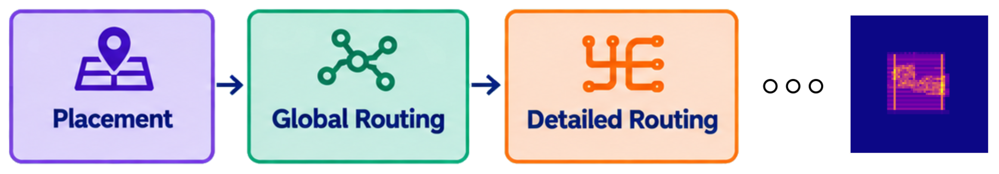
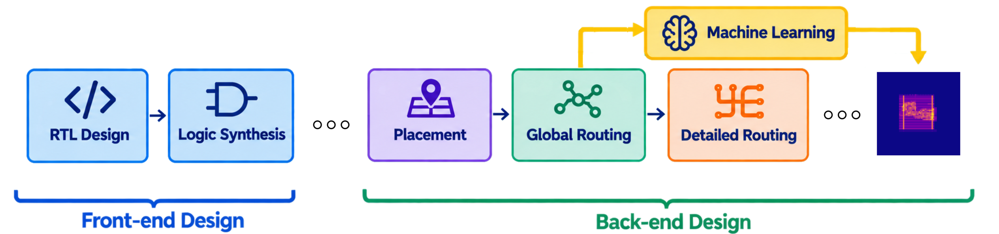
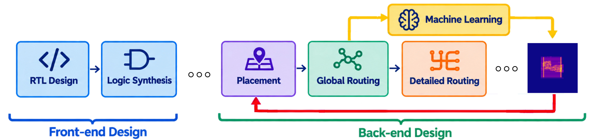

Han Wu, Matty Pattison, Rishad Shafik, Tousif Rahman
Newcastle University
Open-Source EDA Tools


Commercial EDA Tools
ASIC Desgin: RTL to GDSII


Looking Ahead: From Open-Loop to Closed-Loop


https://orconf.wuhanstudio.uk
Source Code